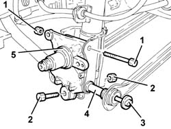
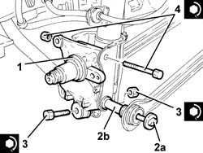
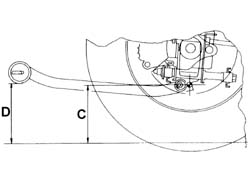
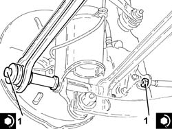

4450D14 hub axle pillar of one rear wheel, l/h or r/h - r+r with hub removed - includes bush replacement if necessary
- Path
- Procedures > 44 SUSPENSION AND WHEELS > 4450 WHEELS AND HUBS > 4450D rear wheel hubs > 4450D14 hub axle pillar of one rear wheel, l/h or r/h - r+r with hub removed - includes bush replacement if necessary
- Kind
- repair procedure (removal / refitting; the operation number is the code)
- Applies to
- all engines; all production periods
- Interactive page
- https://sloeber94.github.io/elrnDB-a147/en/#/3025378
Applies to: all engines; all production periods
 Removing
Removing
 Refitting
Refitting1. Undo the upper nut securing the rear wheel hub stub axle to the shock absorber.
2. Undo the nut securing the rear suspension tie rod to the hub stub axle.
3. Withdraw the screw of the bolt securing the rear suspension front and rear wishbones to the rear wheel hub stub axle.
4. Remove the spacer.
5. Remove the rear wheel stub axle.

Applies to: all engines; all production periods
Refitting
Removing1. Refit the rear wheel stub axle.
2. Refit bolt (2a) complete wtih spacer (2b) securing the front and rear wishbones of the rear suspension to the rear wheel stub axle and screw on the nut without tightening it.
3. Tighten the bolt securing the rear suspension tie rod to the stub axle to the specified torque.
 | Fastening | Component | Ø | Value (daNm) |
|---|---|---|---|---|
3 | Bolt | REAR ANCHORAGE ROD | M12 | (Rear wheel hub stub axle side.) 11.1 ÷ 13.5 |
4. Tighten the upper bolt securing the rear wheel hub stub axle to the the shock absorber to the specified torque.
| Fastening | Component | Ø | Value (daNm) |
|---|---|---|---|---|
4 | Bolt | REAR DAMPER | M12 | (Rear wheel hub stub axle side.) 11.1 ÷ 13.5 |

Applies to: all engines; all production periods
1. Place the suspension in a geometric configuration so that the difference in height between dimension D-C is 13 mm.

Applies to: all engines; all production periods
1. Tighten the bolts securing the rear suspension front and rear wishbones to the rear wheel stub axles.
| Fastening | Component | Ø | Value (daNm) |
|---|---|---|---|---|
1 | Bolt | REAR SUSPENSION./ FRONT. REAR. TRACK CONTROL ARMS. | M12 | (Rear wheel hub stub axle side.) 11.1 ÷ 13.5 |
